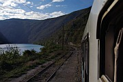
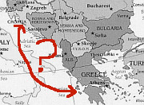

A closer look at the Balkans
In these pages I look in more detail at a few topics relating to Southeast Europe as a whole, or to more than one country within the region. For details of specific cities and regions, please see the individual country pages.
|  |
Scenic train journeys in the BalkansA region with as many spectacular mountain ranges and valleys as the Balkans is bound to have a few scenic railways - but where? Read this article to find out. |
|  |
How to travel from Croatia to Greece (and vice versa)A whole page devoted to the single most common question asked by visitors to this site: what is the best way to get from Croatia to Greece? The answer is more complicated than you might think. |
The Cyrillic Alphabet in the BalkansIf you are going to travel through certain parts of the Balkans, it helps to be able to read the Cyrillic Alphabet. This page has some notes on the Bulgarian, Serbian, and Macedonian variations, with a table of Cyrillic characters and their equivalents in the Latin alphabet. |